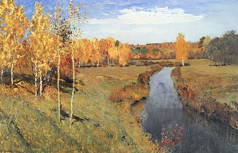

Золотая осень
«Золота́я о́сень» — пейзаж русского художника Исаака Левитана (1860—1900), написанный в 1895 году. Принадлежит Государственной Третьяковской галерее в Москве (инв. 1490). Размер картины — 82 × 126 см[1][2]. Левитан начал работу над полотном осенью 1895 года, когда он жил в усадьбе Горка в Тверской губернии; там же были написаны первые этюды[3]. Исследователи творчества художника полагают, что на картине изображена река Съежа[4]. По-видимому, работа над произведением была завершена в конце года в Москве[3].